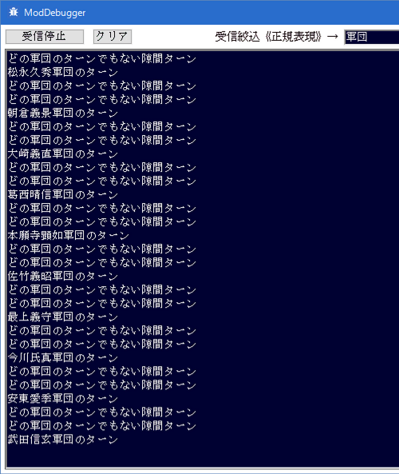

行動する軍団が変わったタイミングと、
どの軍団も行動しなくなったタイミングの
双方で呼ばれるイベントハンドラとなります。
「どの軍団も行動しなくなったタイミング」でもこのイベントハンドラが呼ばれるということをは重要です。
どの軍団も行動していない時には、通常、軍団番号に「0xFFFF」が入った状態で、
このイベントハンドラが呼ばれます。
各軍団ターンの頭で、このイベントハンドラが呼ばれるという特性は、
大名・軍団・武将・城など、いずれの値を更新するとしても、
とても都合の良いタイミングであるため、
値の取得と書き換え等は、ほとんどがこのイベントハンドラに集約されると思います。
実際に各種SDKの解説も、このイベントハンドラを用いたものが多くなっています。
まずは、このイベントハンドラがどのような時に呼ばれるのか、
天翔記HDの画面とModDebuggerを両方見ながら確認しましょう。

回ってきた軍団ターンが、プレイヤが直接担当している軍団なのか？
というのは最もよく利用する記述となることでしょう。
この「My_戦略_軍団ターン変更時」が呼び出された瞬間は、
ダイアログや吹き出しなどが表示されていないことが保証されています。
このため、「独自のイベント」を記述するのに最も適した場所は、このイベントハンドラ内ということになります。
ソースサンプルの多くは、「My_戦略_軍団ターン変更時」内で記述するサンプルとなっていますので、
それらを参考としてください。
「My_戦略_軍団ターン変更時」イベントハンドラについて、主な解説は以上となります。